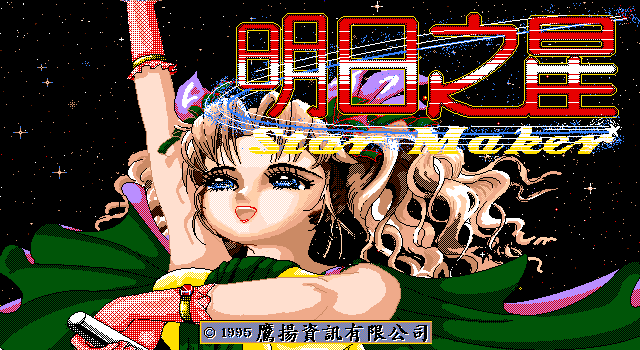
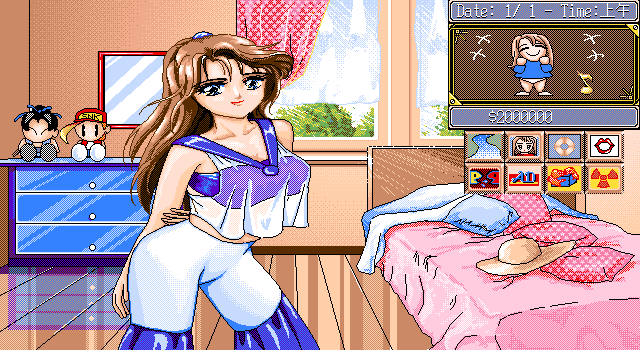

名稱：明日之星1 (Star Maker，中文版) 簡介：鷹揚1995年出品的明星養成遊戲，2000年由歡樂盒代理發行Windows光碟版 [待補]。

保護：圖案密碼，破解碼： STAR.EXE (先用PKLITE或UNP解壓縮) 83 7E FE 03 74 03 (密碼不會出現) -- -- -- -- EB -- 或 9A 06 16 0E 1C 8B F0 (密碼不會出現) EB 5A 90 90 90 -- -- 或 9A 06 16 0E 1C 8B F0 (密碼不會出現) B8 01 00 90 90 -- -- 或 9A 06 16 0E (密碼隨便輸入) -- 05 -- -- 備註：歡樂盒版只能在Windows上安裝，但內容仍為DOS版，建議使用DosBox執行。 備註：電腦速度不可太快，否則可能偵測不到音效卡而沒有音樂。 修改：STAR.EXE (先用PKLITE或UNP解壓縮) 1.修正DosBox一執行就Abnormal program termination跳出 0B C3 CB 5B 20 -- CB -- -- -- 檔案：star-new.rar = 2000年歡樂盒版